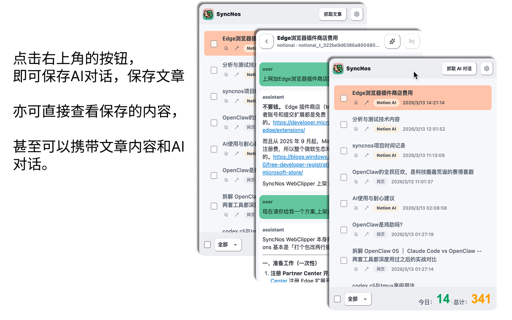

WebClipper, as your local fact source.
WebClipper，作为你的本地事实源。
Capture AI chats, long articles, and video transcripts in the background.
后台采集 AI 对话、网页长文与视频字幕。
SyncNos builds open source, local-first tools for capturing AI chats, web articles, and video transcripts—then syncing or exporting on your terms. SyncNos 为“沉淀”而生：开源、本地优先，采集 AI 对话、网页长文与视频字幕，再由你决定同步或导出。

WebClipper is the main product today. Others are early previews, aligned to the same local-first workflow. 当前以 WebClipper 为主，其它产品先作为预告入口，但坚持同一套本地优先的工作流。
This section becomes a scroll-driven story: capture, normalize, sync, export—one step at a time. 这里会变成一段滚动叙事：采集、规范化、同步、导出，一步一步展开。